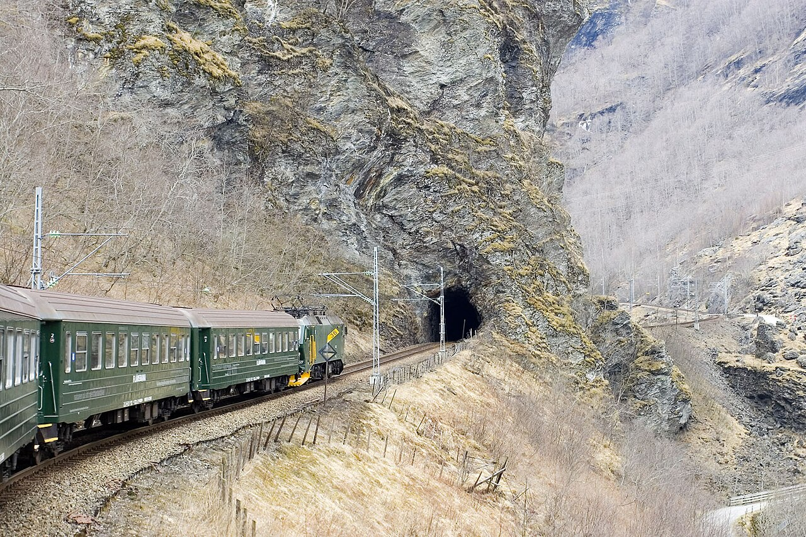
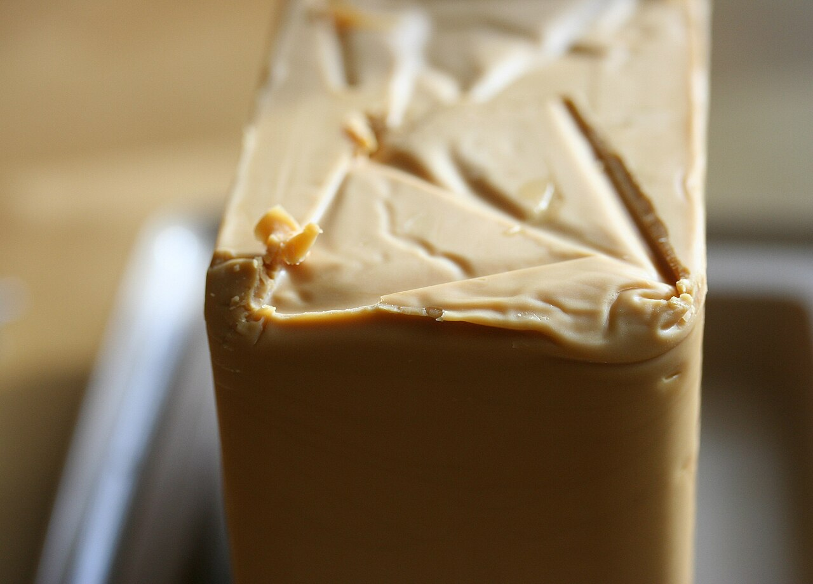
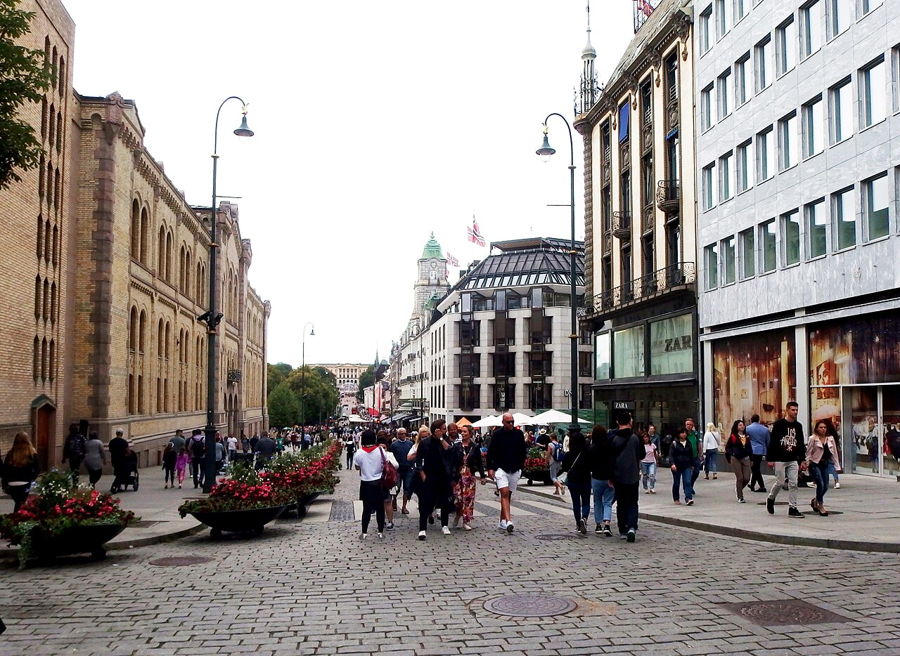
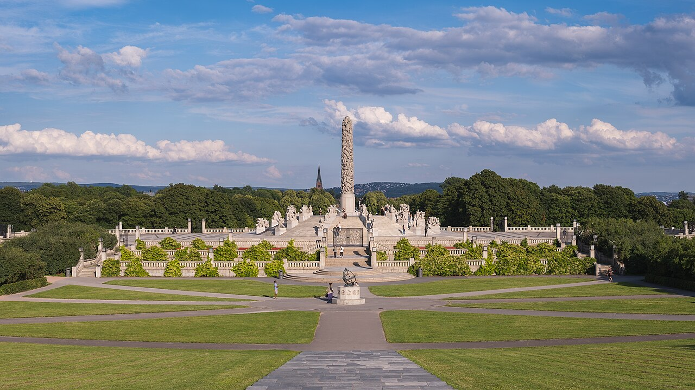

Bryggen — joiseyshowaa / CC BY-SA 2.0
Bryggen — joiseyshowaa / CC BY-SA 2.0港を中心に見どころが半径ワンコインに凝縮。ホテル（スカンディック バイパルケン）は魚市場・ブリッゲンから徒歩圏で、到着後の夕方だけでも十分回れます。年間200日以上雨と言われる街なので、雨具とスニーカーは必携。
ブリッゲンBryggen ／ 世界遺産・ハンザ同盟の木造倉庫群
📍 Googleマップで見る三角屋根のカラフルな木造家屋が並ぶ街のシンボル。今は土産物店・ギャラリー・レストランに。奥へ続く狭い路地に入るだけなら無料で、中世にタイムスリップしたような迷路が楽しめます。
フロイエン山Fløyen ／ ケーブルカー Fløibanen で約6〜8分
📍 Googleマップで見る標高約320mから街とフィヨルドを一望する絶景スポット。山頂にはカフェ・レストラン・土産店・子どもの遊び場・小さな牧場があり、散策路も。歩いて登る地元流の散歩道も人気です。
ローセンクランツの塔 & ホーコン王の館Rosenkrantztårnet / Håkonshallen ／ ブリッゲン隣
📍 Googleマップで見る中世ベルゲンの歴史を伝える塔と大広間。塔の屋上は街とフロイエン山を見渡す展望台に。周辺の公園・広場は無料で、『アナと雪の女王』の着想の地のひとつとも言われます。
魚市場（フィスケトルゲット）Fisketorget ／ 港沿い・ブリッゲン近く
📍 Googleマップで見るサーモン、エビ、タラバガニ、クジラ肉、シュリンプサンドなど。好きな魚介を選んで焼いてもらえ、イートインスペースも充実。大鍋で作る名物パエリアを目当てにする旅行者も。
ブリッゲロフテ & ストゥーネBryggeloftet & Stuene ／ ブリッゲン内の老舗
📍 Googleマップで見るブリッゲンの中にある人気レストラン。夜遅めの時間でも賑わっており、タラなどノルウェーの伝統料理が味わえます。落ち着いた店内から街並みを眺めながら食事を、という旅行記が目立ちます。
トレクロー二エンTrekroneren ／ 中心部・老舗ソーセージスタンド
📍 Googleマップで見る1946年から続く名物のホットドッグ／ソーセージ屋台。トナカイやエルク（ヘラジカ）のソーセージが名物で、リンゴンベリーやカリカリオニオンをのせて食べます。数百円台で北欧のジビエを気軽に味わえ、物価の高いベルゲンで頼れる軽食スポット。街歩きの合間の小腹埋めにぴったりです。
スキリングボーレ（シナモンロール）Skillingsbolle ／ Baker Brun など街のベーカリー
📍 Googleマップで見るベルゲン発祥とされる大きなシナモンロール。ブリッゲンの老舗ベーカリー Baker Brun をはじめ、街のパン屋やカフェの定番で、コーヒーと合わせるのが地元流。甘さは控えめで生地はしっとり、朝食やおやつに。雨宿りを兼ねてカフェで一息つくのにも向きます。
 Flåm — Hesse1309 / CC BY-SA 3.0
Flåm — Hesse1309 / CC BY-SA 3.0クルーズ到着後、フロム鉄道に乗るまでの自由時間。人口約500人の小さな村で、駅・港・店が至近に集まっています。正味1時間50分は昼食＋お土産で意外と短いので、遠出はせず村中心で過ごすのが現実的です。
村の散策 & フロム鉄道博物館駅・港エリア ／ 博物館は無料

📍 Googleマップで見る前は海、背後に急峻な山と滝が迫る絶景の村。旧駅舎を使ったフロム鉄道博物館は無料で、実物車両や資料映像など見ごたえがあり、待ち時間の見学にぴったり。港ではクルーズ船からカヤックまで大小の船の出入りを眺められます。
お土産 & ブラウンチーズ駅併設のショップ ／ 品揃え充実
📍 Googleマップで見る
駅に併設された広めの土産店があり、限られた時間でもまとめ買い可能。試食できるブラウンチーズ（ヤギ乳のキャラメルのような茶色いチーズ）は「チーズの概念が変わる」と評判で、お土産の定番です。専用のチーズスライサーと合わせて買うのも◎。
エーギル ブリュッゲリ パブÆgir Bryggeri Pub ／ フロム渓谷の水で醸す自家製ビール
📍 Googleマップで見る北欧神話の神「エーギル」を冠したクラフトビール醸造所。ヴァイキング風の内装に大きな暖炉があり、迷ったらビールのテイスティングセットを。多くの旅行者が下船後の待ち時間に立ち寄る人気店です。
駅前のベーカリー / Coopパン・軽食 ／ 短時間ランチ向き
📍 Googleマップで見る港・鉄道の出発前は混みやすいので、パンは早めに購入するのが吉。店数が多くなくフェリー待ちの人で混み合うため、スーパー Coop で軽食を調達してフロム鉄道の車内で食べるのも時短の手です。
フルクロア（温かい食事）Furukroa Café ／ 駅・港のすぐそば
📍 Googleマップで見るフロムの港エリアにあるカフェテリア。スープやサンドイッチ、温かい軽食をセルフサービスで手早く取れるので、正味1時間50分の限られた時間でもさっと昼食を済ませたい人に便利。ベーカリーや土産コーナーも併設で、雨天時の待避所としても重宝します。
- 次のフロム鉄道（16:00発）は自由席。滝ショースフォッセンが見える進行方向右側の席が人気なので、早めにホームで並ぶのがおすすめ。
- フロム鉄道は途中ショースの滝で約5分停車し、ホームに降りて撮影できます（妖精のパフォーマンス演出も）。車内は多言語の日本語解説あり。
- スーツケースは各自持ち運び。身軽な服装＋防風ジャケットで。フィヨルドのデッキ・山岳部は冷えます。
- 📒 参考：Cafe de Cooky（ショースの滝）/私の海外鉄道旅行（座席）
 Tromsø — Virtual-Pano / CC BY-SA 4.0
Tromsø — Virtual-Pano / CC BY-SA 4.0「北のパリ」と呼ばれる北極圏最大の街。昼は街歩き＆展望、夜はオーロラという組み立てがしやすいのが魅力。ホテル（クオリティ サガ）はバス停が目の前で、ミニバスチェイスの集合にも便利です。中心部はコンパクトですが、目的地は見た目より遠いのでバス活用を。
北極教会Ishavskatedralen（トロムスダーレン教会）／ 対岸・バスで橋を渡る
📍 Googleマップで見る三角屋根とステンドグラスが美しい街のシンボル。全面ガラス張りで、日照の少ない時期も内部が自然光で明るく照らされます。ゴシック様式とは対照的なシンプルでモダンな造りで、モザイク画のようなステンドグラスが見どころ。橋を渡った対岸にあり、ケーブルカーとセットで回るのが定番です。
フィエルハイセン（ストールシュタイネン山）Fjellheisen ／ ケーブルカー約4〜5分・標高421m
📍 Googleマップで見るトロムソ島・街並み・フィヨルドを一望する絶景展望台。白いトロムソ橋や三角屋根の連なりが美しく、晴れた夜はここからオーロラを狙う人も。山頂にはレストランと屋外展望デッキがあります。
ポラリア & 街歩きPolaria／Storgata通り・北極圏博物館・北方美術館
📍 Googleマップで見るポラリアは北極圏の生き物を展示する体験型施設で、アザラシの餌やりが人気。屋内なので荒天時にも重宝します。中心部の Storgata 通りや港の散策、観光案内所（Visit Tromsø）でもらえる北極圏到達証明書（約90NOK・日付と名前入り）も旅の記念に。
Bardus Bistro中心部 ／ トナカイ料理
📍 Googleマップで見るトナカイ肉が「柔らかくて食べやすい」と評判のビストロ。ヨーロッパの肉料理にありがちな重さがなく、ペロッと食べられたという声も。北極圏らしいジビエを試すのにおすすめの一軒です。
Skarven（Biffhuset Skarven）Strandtorget 1 ／ 港沿い・地元人気
📍 Googleマップで見る港のそばにある地元で人気のレストラン。ビール込みで4,000円ほどという価格帯で、しっかり食事したいときに。北極海の食材を味わえる港エリアの定番です。
Ølhallen（Mack ビール）港エリア ／ 1877年創業の老舗醸造所ビアホール
📍 Googleマップで見るトロムソの老舗醸造所 Mack が営む歴史あるビアホール。トナカイのホットドッグや煮込みなどコクのある郷土料理とビールの相性が抜群。広場前のカフェも便利ですが、一本路地に入ると地元の良店に出会えます。
ラケッタRaketten Bar & Pølse ／ 中心部ストルトルゲット広場・世界最小級のバー
📍 Googleマップで見る1911年から広場に立つ、ノルウェーで最も小さいとも言われる屋台バー。名物はトナカイソーセージのホットドッグで、寒い夜の街歩きの合間にぴったり。数百円台で温かいものが食べられ、オーロラ待ちの前の腹ごしらえにも便利な、地元の名物スタンドです。
カフェ休憩（シナモンロール）Risø／Kaffebønna など中心部のカフェ
📍 Googleマップで見る北極圏の街だけにカフェ文化が根付き、こだわりの一杯を出す店が点在。Risø Mat & Kaffebar や広場の Kaffebønna は、シナモンロールなどの菓子とコーヒーで暖まる定番。日照の短い季節、屋内でほっと一息つける場所を押さえておくと街歩きが快適になります。
 Aurora, Tromsø — Andi Gentsch / CC BY-SA 2.0
Aurora, Tromsø — Andi Gentsch / CC BY-SA 2.0- 9月でも見えます。オーロラのシーズンは9月中旬〜4月上旬。「晴れて空が暗ければ9月でも見られた」という日本人旅行者の実体験ブログが複数あります。
- 目安は3日に1回・1晩あたり50〜70%で、実際は天候（雲）次第。9/19・20の2夜チェイスは確率を上げる好判断です。
- ミニバスチェイスの利点は、雲を避けて晴れ間へ移動できること。市内でも見えることはありますが、光害の少ない郊外が有利。
- 市内で軽く狙うなら、テレグラフブクタ（海側が開けて暗い）やケーブルカー山頂が定番。強めのオーロラなら街中でも視認できたという声も。
- 防寒：沿岸部で気温自体は穏やか（9月はおおむね0〜9℃）ですが、海風で体感が大きく下がります。防風・防水＋重ね着で、足元の冷え対策（ホッカイロ）も。
- 撮影：スマホでは写しにくいので、可能ならカメラ＋三脚があると満足度が上がります。当日は「まず雲、次にKp指数」の順でチェックを。
- 📒 参考：Kazuの気ままな旅（9月）/ホッキョクナビ（確率）/ホッキョクナビ（市内観賞）/AT_YAMAG（ツアーなし）/ぱんだるま（ツアーレポ）/まんださんの旅行記/北欧、暮らしの道具店
 Oslo Opera House — Christian David / CC BY-SA 4.0
Oslo Opera House — Christian David / CC BY-SA 4.0オスロ中央駅を起点に、港側のビヨルヴィカ、市庁舎、王宮周辺を回るコンパクトな計画。実際に観光できるのは9/21（月）の午後と9/22（火）の午前です。市内の乗り物はトラムと地下鉄だけを使い、停留所から入口までの短い徒歩を組み合わせます。
- 9/21（月）：14:30ホテルに荷物を預ける → トラム19番でBjørvika → 15:00〜17:15 MUNCH → 17:20〜18:00 オペラハウス外観・屋上 → 18:05〜18:50 オスロ公共図書館。
- 9/22（火）：8:15チェックアウト → トラム12番でKontraskjæret → 9:00〜9:45 オスロ市庁舎 → トラム12番でSolli → 10:15〜11:10 王宮外観・王宮公園 → Nationaltheatretから地下鉄で中央駅へ。
- 空港には14:00までに到着：11:30頃から昼食、12:30に荷物受取、13:10頃にOslo SからFlytogetまたはVyに乗り、13:35〜13:50頃の空港着を目指します。
- 国立美術館とノーベル平和センターは、この短い日程では見送ります。運行変更があるため、乗車前にRuter公式で乗り場と時刻を確認してください。
オスロ・オペラハウスOperahuset ／ 中央駅から徒歩すぐ・屋根に上れる
📍 Googleマップで見る白い大理石の傾斜した屋根を歩いて上れる、世界でも珍しい建築。氷山を思わせる建物は海辺の風景によく映え、屋上からオスロフィヨルドと街並みを無料で一望できます。今回はMUNCHの後、17:20〜18:00に外観と屋上を見学します。
ムンク美術館MUNCH ／ オペラハウス隣・13階建て
📍 Googleマップで見る2021年にビヨルヴィカへ移転した13階建ての美術館。「叫び」「マドンナ」などの代表作に加え、企画展、ショップ、カフェ、展望スペースもあります。今回は月曜15:00〜17:15に鑑賞します。
オスロ公共図書館Deichman Bjørvika ／ 月〜金曜8:00〜22:00・入館無料
📍 Googleマップで見る 🔗 公式サイト地上5階のモダンな公共図書館。シアタールーム、3Dプリンターやミシンを備えたワークスペース、カフェなど、図書館を超えた設備が充実しています。今回はオペラハウスの後、18:05〜18:50に館内と眺望スペースを見学します。
オスロ市庁舎Rådhuset ／ 毎日9:00〜16:00・入場無料
📍 Googleマップで見る 🔗 公式サイトノーベル平和賞の授賞式会場として知られる市庁舎。巨大壁画や2階の「ムンクの間」を見学できます。今回は火曜の開館9:00に入館し、9:45まで見学。入口の保安検査を見込み、少し早めに到着します。
王宮・王宮公園Det kongelige slott / Slottsparken ／ 今回は外観と公園
📍 Googleマップで見る 🔗 公式サイトカール・ヨハン通りの西端に立つ王宮と、市民の憩いの場である緑豊かな王宮公園。2026年の王宮内部見学は6月20日〜8月16日のため、9月22日は外観と公園を10:15〜11:10に見学します。
カールヨハン通りKarl Johans gate ／ 中央駅〜王宮を結ぶ約1.3km

📍 Googleマップで見る大聖堂・国立劇場・グランドホテルが並ぶメインストリート。西半分は歩行者天国で、カフェや小さなショップ巡りが楽しい。王宮側は小高く、振り返ると駅方向へ街が広がる眺めが気持ちいいです。
ヴィーゲラン公園（フログネル公園）Vigelandsparken ／ 入場無料・トラム15〜20分

📍 Googleマップで見る彫刻家ヴィーゲランの200体超の作品が「人間の一生」をテーマに並ぶ公園。中央の塔「モノリッテン」と、地団駄を踏む「おこりんぼう（Sinnataggen）」が名物。正門から入ると作品の並びを意図通りに辿れます。
アーケルブリッゲ & アーケシュフース城Aker Brygge / Akershus ／ 港沿いの再開発エリア
📍 Googleマップで見る造船所跡を再開発した海沿いのエリアで、レストラン・バー・遊歩道が集まるグルメ&散歩スポット。隣接する中世のアーケシュフース城とあわせて、夕方の海辺の散策が心地よい一帯です。
The SalmonStrandpromenaden 11 ／ サーモン尽くし・港沿いテラス
 📍 Googleマップで見る
📍 Googleマップで見る
その名の通りサーモン専門。ホットスモークドサーモンは「ふわふわで脂がのって美味しい」と評判で、中心地でアクセス良好。平日ランチなら予約なしでも入りやすいという声。ランチ1皿4,000円ほどが目安です。
Louise Restaurant & BarStranden 3 ／ アーケルブリッゲの港側
📍 Googleマップで見る港をさらに進んだ先のシーフード店。「サーモンのトリュフ刺身ポン酢」など和のひねりを利かせたメニューも。夜遅め（20:30過ぎ）でも予約なしで入れた、という体験談があります。
Oslo Street Food / Mathallenフードホール ／ 比較的リーズナブル
📍 Googleマップで見る世界各国の料理が集まる屋内フードホール。物価の高いオスロで気軽に食べたいときの定番で、観光の合間のランチや軽めの夕食に。ノルウェーはコーヒー大国なので、街歩きに疲れたらカフェやシナモンロールの休憩も◎。
フィスケリエットFiskeriet Youngstorget ／ Youngstorget 2b ／ 魚屋併設の食堂
📍 Googleマップで見る鮮魚店が営むカジュアルなシーフード食堂で、名物はフィッシュ&チップスやフィッシュスープ。高級店より気軽な価格帯で、しっかり魚を食べたいランチに便利。中心部の Youngstorget 広場に面し、観光の動線に組み込みやすい一軒です。
シーヴェルキオスケンSyverkiosken ／ Maridalsveien 45 ／ 昔ながらのホットドッグ売店
📍 Googleマップで見るオスロに残る数少ない伝統的なpølse（ホットドッグ）キオスク。ロンパ（薄いポテトブレッド）で巻くローカルスタイルや、カリカリオニオン・シュリンプサラダなどのトッピングが名物。物価の高いオスロで、数百円で小腹を満たせる庶民派の味です。
- ホテルはオスロ中央駅舎内。9/21は14:30に荷物を預けて出発し、9/22は8:15にチェックアウトして荷物を預けます。
- 市内移動はトラム・地下鉄のみ。月曜はトラム19番、火曜はトラム12番と地下鉄を利用し、停留所から施設までは短い徒歩です。
- 9/22は13:10頃にOslo Sを出発し、14:00までに空港着。中央駅↔空港はFlytogetまたはVyで約20〜25分。
- 広場・駅・港周辺はスリ・置き引きに注意。バッグは前に、貴重品は分散して。
- 📒 参考：ももへこさんの旅行記/hirominさんの旅行記
スーパーマーケットSupermarket — 物価の高い国での食費対策
外食が1皿4,000〜5,000円のノルウェーでは、スーパーの活用が旅の財布を大きく助けます。1日1食はスーパーの惣菜やサンドイッチで軽く、が定番。サンドイッチ・サラダ・パン・果物・チーズなどが手頃で、朝食やフロム鉄道・空港での軽食調達にも便利です。以下は旅行者がよく使う主要チェーンです。
キーウィKIWI ／ 緑の看板・最も見かける格安チェーン
📍 近くの店舗を探す緑の看板が目印の全国チェーンで、街なかで一番よく見かけます。価格が安く営業時間も長め（夜遅くまで開いている店も多い）ので、旅行者の"とりあえずここ"的存在。惣菜・サンドイッチ・パン・果物・水などが揃い、トロムソやオスロの中心部にも店舗があります。
レマ1000Rema 1000 ／ 青い看板・シンプルな激安店
📍 近くの店舗を探すKIWIと並ぶディスカウントの二大巨頭。品揃えを絞って価格を抑えるスタイルで、パンや乳製品、基本の食料品が安く買えます。KIWIと見つけた方へ、くらいの感覚で使えます。
コープCoop（Extra／Prix／Mega／Obs）／ 大小さまざまな協同組合系
📍 近くの店舗を探す店舗形態が幅広い協同組合系チェーン。Coop Extra は割安、Coop Mega／Obs は品揃え豊富と、看板で規模がわかります。フロムの村にも Coop があり、ナットシェルの待ち時間の軽食調達に便利でした。
メニーMeny ／ 品揃え最強・惣菜と鮮魚コーナーも
📍 近くの店舗を探すディスカウント系よりやや高めですが、品揃えは随一。惣菜・寿司・サラダバー・鮮魚や精肉のカウンター、チーズやお土産向きの食品も充実しています。ブラウンチーズやチョコなどお土産のまとめ買い、ちゃんとした惣菜で食事を済ませたいときに重宝します。
- ブラウンチーズ（Brunost／Gudbrandsdalsost）：定番土産。軽くて配りやすく、スーパーなら土産店より割安。チーズスライサーも一緒に。
- フレイアのミルクチョコ（Freia Melkesjokolade）とクックルンシュ（Kvikk Lunsj）：国民的チョコ。ハイキングのお供＝クックルンシュはお土産にも人気。
- 魚の缶詰・チューブ入りキャビア（Kalles／Mills）・フィッシュボール：ノルウェーの食卓の味を手軽に。パンにのせて朝食に。
- サンドイッチ・サラダ・シナモンロール：そのまま昼食に。物価の高い国での強い味方です。
- 日曜は休み・短縮営業の店が多い。大型店ほど閉まりがちで、日曜は小型の「Joker」やキオスク（Narvesen等）頼みに。9/20（日）トロムソは前日までに買い足しておくと安心。
- ペットボトル・缶にはデポジット（Pant）。店頭の回収機（Pant）に返すとお金が戻ります。レシートをレジで精算。
- 水道水がおいしく無料。ミネラルウォーターをわざわざ買わず、マイボトルに給水すれば節約に。
- 支払いはほぼカード／タッチ決済でOK。セルフレジも一般的です。
Before you go
旅を通しての基本メモ
💳 ほぼ完全キャッシュレス
カフェ・スーパー・トイレのチップまでカードでOK。現金はほとんど不要で、無理にクローネへ両替しなくても困らない、という声が大半です。
💰 物価が非常に高い
外食は1皿4,000〜5,000円が当たり前。スーパー（KIWI／Coop／Rema1000）やテイクアウトを使い、1日1食は軽く済ませると財布に優しいです。
🧥 9月中旬の服装
重ね着＋防風・防水ジャケットが基本。フィヨルドのデッキ、山岳部、トロムソは特に冷えます。歩きやすい防水スニーカーを。
🌦️ 天気は変わりやすい
特にベルゲンとノルウェー沿岸は雨が多く、天気が急変します。「今悪くても30分後には晴れる」ことも。傘より防水ウェアが実用的。